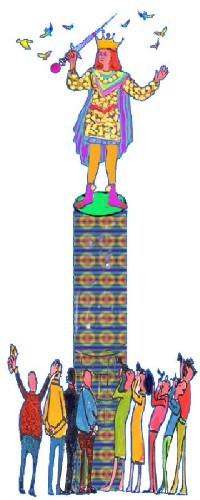
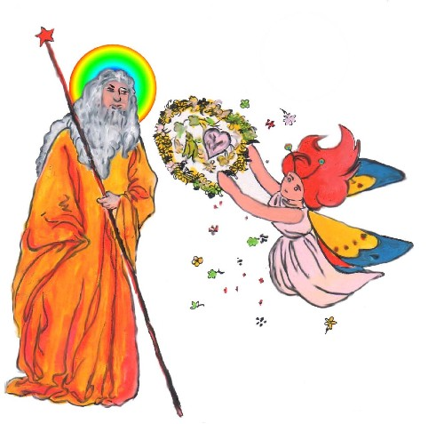

快乐王子 作者 王尔德 译者江铭辉
快乐王子是一座雕像，高高屹立在城市又高又大的圆柱上。他身上缀满了精致的薄金叶片，眼睛镶嵌着两粒闪亮的蓝宝石，剑柄上闪耀一颗巨大的红宝石，确实令人非常羡慕。
「像孔雀般的漂亮」，二位渴望获得艺术品味声望的市议员当中一位这样说。「只是，好像不怎么实用，」为了怕有人以为他不切实际，他又赶紧补上这句话。实际上，他做人最现实了。
「为什么你不学学快乐王子呢？」一位聪明的母亲对她那哭闹着要摘天上月亮的儿子这样说。「快乐王子从来不会作白日梦，哭闹着要任何东西的。」
「我很高兴看到世界上还有这么快乐的人，」一个郁郁寡欢的人当他凝视这座神奇的雕像，喃喃细语地说。
「他看起来像天使」，一群披着鲜艳红色斗蓬，围着洁白围兜的慈善院孩童，在踏出教堂大门时，齐声说道。 「你们如何知道？」，广场有位数学老师问道，「你们可是从来没看过天使。」 「啊!可是我们在梦里看见过天使。」，孩子们答道；然而，数学老师却皱着眉头，脸上现出生气的表情。因为，他并不赞同小孩子作太多白日梦。
有一天晚上，一只小燕子飞掠过城市上空。它的伙伴们早在六个星期前就飞到

图：快乐王子高高耸立在圆柱上，被人所羡慕。
埃及去过冬了，它因为忙着和最美的芦苇小姐谈恋爱而延误了行程。它们相识于初春时节，那时，它追逐着一只大黄蛾来到河边，一眼见到到芦苇苗条的腰杆立刻被吸引住了，情不自禁地停下来和她聊天。 「我可以爱妳吗？」小燕子问道，它立刻直截了当的说，芦苇小姐无语地弯着腰对它鞠躬。于是他在她身旁飞绕着，还用翅膀点触着水面，撩起一波波银色的涟漪。这就是它的罗曼史，而且这段感情持续了一整个夏季。 「这真是一桩可笑的恋情，」另一只燕子格格地笑道，「她不但没钱，而且亲戚太多了；的确，河边确实长满了芦苇。然后，当秋天来临，它们全部飞走了。 自从同伴离开之后，它感觉得有些寂寞，而且开始讨厌它的情人。「她无法交谈，」燕子说：「而且，我怕她是个水性杨花的女人， 因为她总是爱与风调情。」的确，风一吹，芦苇就弯着腰行最优雅的鞠躬礼。「我承认她很爱家，」燕子继续说，「可是我喜欢旅游，所以我的妻子必然地也爱旅游。」 「你愿意同我一道走吗？」它终于开口问道；但是芦苇却摇摇头，因为她是如此被家庭黏住。 「原来妳一直在耍我，」它叫道，「我耍离开去看金字塔了。再见！」说完，它便飞走了。 它飞了一整天，到了夜晚它抵达这个城市。「我该在哪儿歇脚呢？」他说，我「希望这城市有栖身的地方。」 然后，它瞧见高高圆柱上的雕像。「我就在那儿歇脚，」他大叫，「好地方，空气新鲜。」于是它在快乐王子二脚之间落下。 ． 」 「我有个黄金打造的床铺，」环视四周后，它轻声细语地说，然后它准备就寝了；但是正当它把头埋进翅膀时，一颗大水珠落在它身上。「多么可笑！」它大叫，「天空一片云也没有，星光这么清澈、灿烂，竟然还会下雨。看来北欧的天气真是可怕。「芦苇一向喜欢雨水，可是那是她个人的事啊！」 正说着，一颗水珠又落了下来。 「这雕像若不能遮雨还有什么用呢?」它说；「我还是找一个良好的烟囱顶管避避雨较好，」于是它决定起飞离。
但是就在它展翼起飞之前，第三颗水珠落下，它往上看，啊!你瞧，它看什么事情？快乐王子的双眼充满泪水，眼泪向下流到他黄金色的脸颊。在月光的映照下，他的面容如此地美丽，以致于小燕子充满爱怜。 「你是谁？」它问。 「我是快乐王子。」 「那么，你为何在叹息？」燕子问；「你完全淋湿了我」 「当我活的时候，我有一颗一般人的心脏，」雕像回答，「我不知道泪水是什么，因为我住在无忧的王宫里，从不让悲伤进入。在白天我跟我的同伴在花园玩耍，晚上，我在庞大的宫庭跳舞。花园四周围绕着极高的围墙，但我从来不关心去问围墙后面是什么？对于我每件事情都非常美丽。我的朝臣们叫我为快乐王子，如果声色娱乐就是快乐的话，那么，我的确很快乐。我就这样地过了一生，死了。现在我死了，他们把我放在这么高的地方，使我能看尽这城里一切的丑恶兴悲惨。非常悲伤的是，我没有办法选择，我的心脏是由铅作成的。」 「什么！他难道不是全金打造的？」燕子自语着，它是太客气了，以至于没有大声地发表个人的高见。 「在远方，」雕像继续以低缓美妙的声音说道，「在远方的一条小街有一户贫苦人家。其中有一扇窗没有关，透过这扇窗我看到一位妇人坐在桌前。她的脸干扁憔悴，双手既粗糙又红肿，且充满针头扎伤的痕迹。她是个女裁缝，正为皇后身边最漂亮的一位未婚侍女赶着绣下一次宫廷舞会要穿的丝缎礼服上的热情花朵。 她儿子病了，正躺在房间角落的床上。他发高烧，正央求给他橘子。母亲身无分文，只能给他河水。因此他一直在哭。燕子！燕子！小燕子，你愿意将我剑柄上的红宝石取出，送给她吗？我的双脚都黏在座上，不能移动。」 「可是我可望飞往埃及，」燕子说。「我的朋友们正沿着尼罗河飞行，和一大群莲花谈天。不久，它们将飞到伟大国王的坟墓上睡觉。此地的国王躺在彩绘的棺材里，身上缠着黄色的亚麻布，还涂敷着香料。颈项上环绕一条淡绿色的碧玉项链，手像干枯的树叶一般。」 「燕子！燕子！小燕子，」王子说，「你愿意留下来陪我一夜，当我的信差好吗？ 那个小男孩是如此饥渴，他妈妈又如此伤心。」 「我不喜欢小男孩，」燕子答，「去年夏天，我在河边玩的时候，有两个粗鲁的孩子，磨坊主人的儿子，他们总是拿石头丢我。当然，他们是打不到我啦，我们燕子飞行技术太好了，除外，我是来自以动作灵敏著称的家族。不过，再怎么说，这证明他们的举动是无礼的。」
然而，快乐王子那悲伤的表情倒是让小燕子感到难过。「这里好冷，」它说；「不过，我还是决定留下来，陪你一个晚上，当你的信差。」 「谢谢你，小燕子，」王子说。 于是燕子从王子的剑柄上取下那颗巨大的红宝石，用它的嘴衔着红宝石，飞过城裹建筑物的屋顶。 它飞过竖立白色大理石天使雕像的教堂尖端。经过皇宫，并听到王宫传出的歌舞声。一位美丽的少女和她的恋人走出皇宫，在阳台上。 「这些星星真美，」恋人对少女倾诉着，恋爱的魔力多么奇妙！ 「真希望我的礼服能在豪华舞会之前做好，」少女说道；「我特别吩咐在礼服绣上热情的花朵；可是这些女裁缝师懒得要命。」 小燕飞过河流，看到每只船的桅杆都挂着灯笼。它飞过犹太人聚居的地方，看见几个老犹太人正在做生意，正用铜秤在算钱币。最后，它终于抵达目这可怜的房子，往里面瞧。小孩子发烧地正在床上翻来覆去，母亲则疲惫得趴在桌上睡着了。如它所愿，它将大红宝石放在桌子妇人使用的针筒旁边。然后轻轻飞绕床铺，用它的翅膀扇着小男孩的额头，「好凉快啊，」小男孩说，「我的病一定是快好了，」说完，小男孩香喷喷地睡着了。 然后，燕子飞回快乐王子身旁，并将它所做的事告诉他。「好奇怪，」燕子说，「虽然天气很冷，我却觉得自己身上好暖和。」 「这是因为你做了一件善事。」王子说。如此，小燕子开始沈思，然后睡着了。沈思一向会加速它入睡。 当天一破晓，它便飞到河边去玩，还洗了个澡。「多么不可思议的现象。」一位鸟类学专家刚走过桥上。「冬天竟然还有燕子！」于是，他便写了有关此事的长篇报导，投到当地的报纸。文章一刊出，引起每一个人的引述，但人们却无法了解整篇文章的大部份语句。 「今晚，我要去埃及了，」燕子说，对这个计划，它感到非常兴奋。它参观了此地所有的名胜古迹，还在教堂的尖塔上停了很久。它每到一处就引来麻雀们彼此交谈的声音；「多么奇特的外地小鸟！」如此，它真的得意极了。
当月亮升起时，它飞回快乐王子的身边。「你有信件要我带到埃及吗？。」它大声说道；「我正要出发了。」
「燕子！燕子！小燕子，」王子说，「你不愿意再陪我一个晚上吗?」 「我渴望去埃及哪！」燕子答道，「明天我的伙伴们就要飞到第二个瀑布了。 在那儿，有许多河马躺卧在芦苇丛中，而且有一位马蒙神坐在巨大的花岗岩宝座上。这位神祇整夜守望着星星，一旦晨星闪烁上升，马蒙神便欣悦地大叫一声，而后复归于沉默。中午，黄色的狮子便会来到河边饮水。狮子们的眼睛好像绿宝石，而且吼声比瀑布的声音还要响亮。」 「燕子！燕子！小燕子，」王子说，「在城市远程的简陋阁楼里，我看到有一位年轻人正埋首于堆满稿纸的桌上，他旁边的玻璃杯里放着一束枯萎的紫罗兰。他的头发是棕色黄的但松散凌乱，嘴唇红得像石榴，大大的眼睛中充满梦想。他正给歌剧院导演赶写剧本，可是他冷得几乎无法下笔。壁炉里已经没有炭火，而且他本身也快饿昏了。」 「我愿意留下来再陪你一晚。」燕子说，它确实有一颗好心脏。「我要送给他一颗红宝石吗？」小燕子问。 「哎呀,现在我已经没有红宝石了，」王子回答道；「我全部剩下就是我这双眼睛是值钱的，它们是稀有的蓝卖石，原产于印度，已有千年的历史。挖出其中的一颗，拿去送给那个年轻人。他可以将它卖给珠宝商，然后就有钱买食物和炭火，完成剧本。」 「亲爱的王子，」燕子说；「我不能那样作；」它开始哭泣。 「燕子！燕子！小燕子，」王子说，「能照我说的去作吗？」 因此外燕子衔出王子的眼睛，飞向作家简陋的阁楼。因为屋顶有一个破洞，因此将蓝卖石放入是轻而易举的。经由此洞，燕子飞冲到室内。年青人正把他的头埋在双手间，所以他完全没有听到小鸟翅膀拍打声，他一抬头，看到一颗美丽的蓝卖石放在枯萎的紫罗兰上。 「我将感谢上天了！」他叫到，「这可能来是我的仰慕者送的，」现在我可以完成我的剧本了，他看起来非常快乐。
第二天燕子飞到海港。它停在一只大船的桅竿上，看着水手们搬运以绳索捆绑的大货箱。「嘿咻！嘿咻！给上去啦！」当每次箱柜子要搬上去时，他们大声喊道。
「我要去埃及了！」燕子喊叫，但没有受人注意，当月亮升起时，它飞回快乐王子的身边。 「我要跟你告别了，」它叫着。 「燕子！燕子！小燕子，」王子说，「你不愿意再陪我一个晚上吗?」 「冬天到了，」燕子答道，「这儿很快就要降下寒雪了，在埃及有暖和的阳光，绿油油的棕榈树，还有泥地上躺着一群懒洋洋的鳄鱼。我的伙伴们正在巴勒贝克（Baalbeck）神庙上筑巢，而且周围还会有粉红色、白色的鸽子望着它们，彼此咕咕交谈着。亲爱的王子，我必需离开你，但我永远不会忘记你，明年春天，我会带两颗美丽的宝石回来填在你被取走的地方，一颗比玫瑰还要红的红宝石，另一颗和大海一样湛蓝的蓝宝石。」 「下面的广场上，」快乐王子说道，「站着一个卖火柴的小女孩，她把她的火柴掉到街沟了，那些火柴全都不能用了。如果她没有拿钱回家，她的父亲就会痛打她。她现在正大哭着，这个小女孩既没有穿鞋子也没有穿袜子，光秃秃的小头，没有戴任何东西。把我另一只眼睛取出送给她，这样，她父亲就不会打她了。」 「我愿意留下来再陪你一晚，」燕子说道，「可是我不能再将你的眼睛取出了， 你会完全变瞎子。」 「燕子！燕子！小燕子，」王子说，王子说道。「希望能照我要求去做。」 如此燕子取下王子的另一只眼睛，带着这颗宝石，往下俯冲。它迅速飞过小女孩身旁，把宝石丢进她的手掌中。「多么漂亮的玻璃珠啊！」小女孩叫道，开心得笑着跑回家去了。 然后，燕子飞回王子身边。「你现在什么都看不到了，」它说，「我会，永远留在你身边。」 「不，小燕子，」可怜王子说道，「你必需飞到埃及。」 「我要永远陪着你，」燕子说完便在王子的脚边睡着了。
第二天，它整天坐在王子的肩膀，讲述自己在他乡旅游所见到的奇闻。它告诉王子，曾看到朱鹭在尼罗河的河岸排成一列，用长嘴捕捉金色的鱼；住在沙漠里和人类文明一样古老的狮身人面像，它知道每一件事；还有旁边跟着骆驼缓步行走，手上戴着琥珀炼珠的商人；以及那像黑檀木一样黑，敬拜大水晶球，浩气盖山河（Mountains of the Moon）的国王；更有那需要由二十个祭司以蜂蜜饼喂养，盘睡在棕榈树上的巨大绿蛇；还有那驶着一片扁平大叶横渡大湖，老是和蝴蝶打仗的矮人族。 「亲爱的小燕子，」王子说，「你告诉我许多令人叹为观止的事情，然而，这世间最叫人叹为观止的事却是苦难的世间男、女。这世界最难理解的莫过于苦难。小燕子，你飞在这城市的上空，然后把你所看到的景象告诉我。」 于是，小燕子飞在这城市的上空，看到富人在他们富丽的家中纵情享乐，而乞丐正坐在门口。它飞进黑暗的小巷，看到一群脸上苍白的饥饿孩童目光呆滞地瞧着黑暗暗的街道。而在拱桥的下面，两个小男孩瑟缩在桥墩旁，互相躺着相拥取暖。 「我们好饿！」两个小男孩说道。「你们不可以在躺在这裹」巡夜的人大声喝斥，他们起来在雨中徘徊。 燕子飞回王子身边。并把它所见的一切告诉王子。 「我身体贴有小金片。」王子说道，「你务必它们一片一片地剥下来，送给我可怜的人民。世人总是觉得黄金能使他们更快乐。」 燕子将小金片一片一片地剥下，直到快乐王子看起来完全灰暗无光泽。小金片一片接一片由它送到穷人家，孩子的脸颊逐渐红润，而且他们在街道上嬉戏、欢笑，高声地喊着；「我们现在有面包了。」 不久，开始下雪了，下雪之后，开始降霜。整个城市的街道好像是银色世界，闪闪发光；而屋檐下面悬挂着的冰柱就像水晶做的短刀一般，每个人都穿着皮裘，小男孩们则戴上红色帽子，到冰上溜冰。 可怜的小燕子，觉得愈来愈冷了，可是牠不想离开快乐王子，它太爱他了。它啄取面包师父不小心掉在面包店门外的面包屑充饥，并鼓动翅膀保持身体温暖。 但是，最后它知道自己快冻死了。它再度用仅有的一丝力气飞上王子的肩膀。 「亲爱的王子，再见吧！」它轻轻地说，「让我亲吻你的手好吗?」 「我很高兴，你终于要去埃及了，小燕子。」王子说，「你在这儿耽搁太久了；可是你必需跟我亲嘴道别，因为我爱你。」 「我不是要去埃及，」燕子说，「我就要去死神殿报到，死亡和睡眠是兄弟嘛，不是吗?」 于是，它轻吻快乐王子的嘴唇，倒在王子脚边。
第 8 页，共 17 页
此时，一个奇怪的声音从雕像内部爆裂。好像有什么东西破掉一样。原来，那铅做的心已经裂成二半。这是一个严重可怕下冰霜的气候。第二天早晨，市议员们陪着市长在广场上散步，当他们经过雕像下面的石柱，抬头往上看雕像时。「我的天哪！快乐王子怎么变成这么难看！」市长惊叫道。 「的确是破铜烂铁！」市议员们他们一向附和市长的说法。也抬头往上看。 「他剑柄上的红宝石掉了，两只眼睛不见了，他不在金光闪闪，」市长说着，「实际上，他比乞丐好不了多少。」 「比乞丐好不了多少。」市议员们附和道。 「况且，他的他的脚边还死了一只鸟！」市长继续说道。「我们真该贴个公告，宣布鸟类不准死在这里。」，旁边的书记立刻把这意见记下来。
「他既然已经不再光彩艳丽，就不再有用了，」一位大学美学专家如此说。因此，人们把快乐王子的雕像拆下来了。
然后，将雕像送进镕化炉熔毁，而市长也忙着召开市政会议讨论着，决定这些熔化的物质将作成什么东西。「当然，我们必需另塑一座雕像，」市长说，「那么，就塑成我的雕像吧。
「塑成我!」「塑成我!」每个市议员都说并且争吵着。最后我离开会场时，还听见他们争吵的声音哩！ 「多么奇怪的事情！」 铸造厂工人的领班说道。「这破裂铅做的心脏在镕化炉中怎么不会熔化？我们必须把它扔掉。」于是，他们把它扔到垃圾堆，这里也是死去燕子被丢掉的地方。

图：上帝说：「帮我把城里二件最珍贵的东西送来」
「帮我把城里二件最珍贵的东西送来，」上帝对祂其中一位天使说；于是天使便献给上帝这颗铅制心脏和死去的小鸟。 「你挑选得对，」上帝说，「在我天堂的花园里，这只小鸟将永远欢唱；在我的黄金城市里，这位快乐王子将歌颂我。」
The Happy Prince〈原文〉 High above the city, on a tall column, stood the statue of the Happy Prince. He was gilded all over with thin leaves of fine gold, for eyes he had two bright sapphires, and a large red ruby glowed on his sword-hilt. He was very much admired indeed. "He is as beautiful as a weathercock," remarked one of the Town Councillors who wished to gain a reputation for having artistic tastes; "only not quite so useful," he added, fearing lest people should think him unpractical, which he really was not. "Why can't you be like the Happy Prince?" asked a sensible mother of her little boy who was crying for the moon. "The Happy Prince never dreams of crying for anything." "I am glad there is some one in the world who is quite happy," muttered a disappointed man as he gazed at the wonderful statue. "He looks just like an angel," said the Charity Children as they came out of the cathedral in their bright scarlet cloaks and their clean white pinafores. "How do you know?" said the Mathematical Master, "you have never seen one." "Ah! but we have, in our dreams," answered the children; and the Mathematical Master frowned and looked very severe, for he did not approve of children dreaming.
One night there flew over the city a little Swallow. His friends had gone away to Egypt six weeks before, but he had stayed behind, for he was in love with the most beautiful Reed. He had met her early in the spring as he was flying down the river
第 10 页，共 17 页
after a big yellow moth, and had been so attracted by her slender waist that he had stopped to talk to her. "Shall I love you?" said the Swallow, who liked to come to the point at once, and the Reed made him a low bow. So he flew round and round her, touching the water with his wings, and making silver ripples. This was his courtship, and it lasted all through the summer. "It is a ridiculous attachment," twittered the other Swallows; "she has no money, and far too many relations"; and indeed the river was quite full of Reeds. Then, when the autumn came they all flew away. After they had gone he felt lonely, and began to tire of his lady- love. "She has no conversation," he said, "and I am afraid that she is a coquette, for she is always flirting with the wind." And certainly, whenever the wind blew, the Reed made the most graceful curtseys. "I admit that she is domestic," he continued, "but I love travelling, and my wife, consequently, should love travelling also." "Will you come away with me?" he said finally to her; but the Reed shook her head, she was so attached to her home. "You have been trifling with me," he cried. "I am off to the Pyramids. Good-bye!" and he flew away. All day long he flew, and at night-time he arrived at the city. "Where shall I put up?" he said; "I hope the town has made preparations." Then he saw the statue on the tall column. "I will put up there," he cried; "it is a fine position, with plenty of fresh air." So he alighted just between the feet of the Happy Prince. "I have a golden bedroom," he said softly to himself as he looked round, and he prepared to go to sleep; but just as he was putting his head under his wing a large drop of water fell on him. "What a curious thing!" he cried; "there is not a single cloud in the sky, the stars are quite clear and bright, and yet it is raining. The climate in the north of Europe is really dreadful. The Reed used to like the rain, but that was merely her selfishness." Then another drop fell.
第 11 页，共 17 页
"What is the use of a statue if it cannot keep the rain off?" he said; "I must look for a good chimney-pot," and he determined to fly away. But before he had opened his wings, a third drop fell, and he looked up, and saw - Ah! what did he see? The eyes of the Happy Prince were filled with tears, and tears were running down his golden cheeks. His face was so beautiful in the moonlight that the little Swallow was filled with pity. "Who are you?" he said. "I am the Happy Prince." "Why are you weeping then?" asked the Swallow; "you have quite drenched me." "When I was alive and had a human heart," answered the statue, "I did not know what tears were, for I lived in the Palace of Sans- Souci, where sorrow is not allowed to enter. In the daytime I played with my companions in the garden, and in the evening I led the dance in the Great Hall. Round the garden ran a very lofty wall, but I never cared to ask what lay beyond it, everything about me was so beautiful. My courtiers called me the Happy Prince, and happy indeed I was, if pleasure be happiness. So I lived, and so I died. And now that I am dead they have set me up here so high that I can see all the ugliness and all the misery of my city, and though my heart is made of lead yet I cannot chose but weep." "What! is he not solid gold?" said the Swallow to himself. He was too polite to make any personal remarks out loud. "Far away," continued the statue in a low musical voice, "far away in a little street there is a poor house. One of the windows is open, and through it I can see a woman seated at a table. Her face is thin and worn, and she has coarse, red hands, all pricked by the needle, for she is a seamstress. She is embroidering passion- flowers on a satin gown for the loveliest of the Queen's maids-of- honour to wear at the next Court-ball. In a bed in the corner of the room her little boy is lying ill. He has a fever, and is asking for oranges. His mother has nothing to give him but river water, so he is crying. Swallow, Swallow, little Swallow, will you not bring her the ruby out of my sword-hilt? My feet are fastened to this pedestal and I cannot move."
第 12 页，共 17 页
"I am waited for in Egypt," said the Swallow. "My friends are flying up and down the Nile, and talking to the large lotus- flowers. Soon they will go to sleep in the tomb of the great King. The King is there himself in his painted coffin. He is wrapped in yellow linen, and embalmed with spices. Round his neck is a chain of pale green jade, and his hands are like withered leaves." "Swallow, Swallow, little Swallow," said the Prince, "will you not stay with me for one night, and be my messenger? The boy is so thirsty, and the mother so sad." "I don't think I like boys," answered the Swallow. "Last summer, when I was staying on the river, there were two rude boys, the miller's sons, who were always throwing stones at me. They never hit me, of course; we swallows fly far too well for that, and besides, I come of a family famous for its agility; but still, it was a mark of disrespect." But the Happy Prince looked so sad that the little Swallow was sorry. "It is very cold here," he said; "but I will stay with you for one night, and be your messenger." "Thank you, little Swallow," said the Prince. So the Swallow picked out the great ruby from the Prince's sword, and flew away with it in his beak over the roofs of the town. He passed by the cathedral tower, where the white marble angels were sculptured. He passed by the palace and heard the sound of dancing. A beautiful girl came out on the balcony with her lover. "How wonderful the stars are," he said to her, "and how wonderful is the power of love!" "I hope my dress will be ready in time for the State-ball," she answered; "I have ordered passion-flowers to be embroidered on it; but the seamstresses are so lazy." He passed over the river, and saw the lanterns hanging to the masts of the ships. He passed over the Ghetto, and saw the old Jews bargaining with each other, and weighing out money in copper scales. At last he came to the poor house and looked in. The boy was tossing feverishly on his bed, and the mother had fallen asleep, she was so tired. In he hopped, and laid the great ruby on the table beside the woman's thimble. Then he flew gently round the bed, fanning the boy's forehead with his wings. "How cool I feel," said the boy, "I must be getting better"; and he sank into a delicious slumber.
第 13 页，共 17 页
Then the Swallow flew back to the Happy Prince, and told him what he had done. "It is curious," he remarked, "but I feel quite warm now, although it is so cold." "That is because you have done a good action," said the Prince. And the little Swallow began to think, and then he fell asleep. Thinking always made him sleepy. When day broke he flew down to the river and had a bath. "What a remarkable phenomenon," said the Professor of Ornithology as he was passing over the bridge. "A swallow in winter!" And he wrote a long letter about it to the local newspaper. Every one quoted it, it was full of so many words that they could not understand. "To-night I go to Egypt," said the Swallow, and he was in high spirits at the prospect. He visited all the public monuments, and sat a long time on top of the church steeple. Wherever he went the Sparrows chirruped, and said to each other, "What a distinguished stranger!" so he enjoyed himself very much. When the moon rose he flew back to the Happy Prince. "Have you any commissions for Egypt?" he cried; "I am just starting." "Swallow, Swallow, little Swallow," said the Prince, "will you not stay with me one night longer?" "I am waited for in Egypt," answered the Swallow. "To-morrow my friends will fly up to the Second Cataract. The river-horse couches there among the bulrushes, and on a great granite throne sits the God Memnon. All night long he watches the stars, and when the morning star shines he utters one cry of joy, and then he is silent. At noon the yellow lions come down to the water's edge to drink. They have eyes like green beryls, and their roar is louder than the roar of the cataract. "Swallow, Swallow, little Swallow," said the Prince, "far away across the city I see a young man in a garret. He is leaning over a desk covered with papers, and in a tumbler by his side there is a bunch of withered violets. His hair is brown and crisp, and his lips are red as a pomegranate, and he has large and dreamy eyes. He is trying to finish a play for the Director of the Theatre, but he is too cold to write any more. There is no fire in the grate, and hunger has made him faint." "I will wait with you one night longer," said the Swallow, who really had a good heart. "Shall I take him another ruby?"
第 14 页，共 17 页
"Alas! I have no ruby now," said the Prince; "my eyes are all that I have left. They are made of rare sapphires, which were brought out of India a thousand years ago. Pluck out one of them and take it to him. He will sell it to the jeweller, and buy food and firewood, and finish his play." "Dear Prince," said the Swallow, "I cannot do that"; and he began to weep. "Swallow, Swallow, little Swallow," said the Prince, "do as I command you." So the Swallow plucked out the Prince's eye, and flew away to the student's garret. It was easy enough to get in, as there was a hole in the roof. Through this he darted, and came into the room. The young man had his head buried in his hands, so he did not hear the flutter of the bird's wings, and when he looked up he found the beautiful sapphire lying on the withered violets. "I am beginning to be appreciated," he cried; "this is from some great admirer. Now I can finish my play," and he looked quite happy. The next day the Swallow flew down to the harbour. He sat on the mast of a large vessel and watched the sailors hauling big chests out of the hold with ropes. "Heave a-hoy!" they shouted as each chest came up. "I am going to Egypt"! cried the Swallow, but nobody minded, and when the moon rose he flew back to the Happy Prince. "I am come to bid you good-bye," he cried. "Swallow, Swallow, little Swallow," said the Prince, "will you not stay with me one night longer?" "It is winter," answered the Swallow, "and the chill snow will soon be here. In Egypt the sun is warm on the green palm-trees, and the crocodiles lie in the mud and look lazily about them. My companions are building a nest in the Temple of Baalbec, and the pink and white doves are watching them, and cooing to each other. Dear Prince, I must leave you, but I will never forget you, and next spring I will bring you back two beautiful jewels in place of those you have given away. The ruby shall be redder than a red rose, and the sapphire shall be as blue as the great sea."
"In the square below," said the Happy Prince, "there stands a little match-girl. She has let her matches fall in the gutter, and they are all spoiled. Her father will beat her if she does not bring home some money, and she is crying. She has no shoes or
第 15 页，共 17 页
stockings, and her little head is bare. Pluck out my other eye, and give it to her, and her father will not beat her." "I will stay with you one night longer," said the Swallow, "but I cannot pluck out your eye. You would be quite blind then." "Swallow, Swallow, little Swallow," said the Prince, "do as I command you." So he plucked out the Prince's other eye, and darted down with it. He swooped past the match-girl, and slipped the jewel into the palm of her hand. "What a lovely bit of glass," cried the little girl; and she ran home, laughing. Then the Swallow came back to the Prince. "You are blind now," he said, "so I will stay with you always." "No, little Swallow," said the poor Prince, "you must go away to Egypt." "I will stay with you always," said the Swallow, and he slept at the Prince's feet. All the next day he sat on the Prince's shoulder, and told him stories of what he had seen in strange lands. He told him of the red ibises, who stand in long rows on the banks of the Nile, and catch gold-fish in their beaks; of the Sphinx, who is as old as the world itself, and lives in the desert, and knows everything; of the merchants, who walk slowly by the side of their camels, and carry amber beads in their hands; of the King of the Mountains of the Moon, who is as black as ebony, and worships a large crystal; of the great green snake that sleeps in a palm-tree, and has twenty priests to feed it with honey-cakes; and of the pygmies who sail over a big lake on large flat leaves, and are always at war with the butterflies. "Dear little Swallow," said the Prince, "you tell me of marvellous things, but more marvellous than anything is the suffering of men and of women. There is no Mystery so great as Misery. Fly over my city, little Swallow, and tell me what you see there." So the Swallow flew over the great city, and saw the rich making merry in their beautiful houses, while the beggars were sitting at the gates. He flew into dark lanes, and saw the white faces of starving children looking out listlessly at the black streets. Under the archway of a bridge two little boys were lying in one another's arms to try and keep themselves warm. "How hungry we are!" they said. "You must not lie here," shouted the Watchman, and they wandered out into the rain.
Then he flew back and told the Prince what he had seen.
第 16 页，共 17 页
"I am covered with fine gold," said the Prince, "you must take it off, leaf by leaf, and give it to my poor; the living always think that gold can make them happy." Leaf after leaf of the fine gold the Swallow picked off, till the Happy Prince looked quite dull and grey. Leaf after leaf of the fine gold he brought to the poor, and the children's faces grew rosier, and they laughed and played games in the street. "We have bread now!" they cried. Then the snow came, and after the snow came the frost. The streets looked as if they were made of silver, they were so bright and glistening; long icicles like crystal daggers hung down from the eaves of the houses, everybody went about in furs, and the little boys wore scarlet caps and skated on the ice. The poor little Swallow grew colder and colder, but he would not leave the Prince, he loved him too well. He picked up crumbs outside the baker's door when the baker was not looking and tried to keep himself warm by flapping his wings. But at last he knew that he was going to die. He had just strength to fly up to the Prince's shoulder once more. "Good-bye, dear Prince!" he murmured, "will you let me kiss your hand?" "I am glad that you are going to Egypt at last, little Swallow," said the Prince, "you have stayed too long here; but you must kiss me on the lips, for I love you." "It is not to Egypt that I am going," said the Swallow. "I am going to the House of Death. Death is the brother of Sleep, is he not?" And he kissed the Happy Prince on the lips, and fell down dead at his feet. At that moment a curious crack sounded inside the statue, as if something had broken. The fact is that the leaden heart had snapped right in two. It certainly was a dreadfully hard frost. Early the next morning the Mayor was walking in the square below in company with the Town Councillors. As they passed the column he looked up at the statue: "Dear me! how shabby the Happy Prince looks!" he said. "How shabby indeed!" cried the Town Councillors, who always agreed with the Mayor; and they went up to look at it.
第 17 页，共 17 页
"The ruby has fallen out of his sword, his eyes are gone, and he is golden no longer," said the Mayor in fact, "he is litttle beter than a beggar!" "Little better than a beggar," said the Town Councillors. "And here is actually a dead bird at his feet!" continued the Mayor. "We must really issue a proclamation that birds are not to be allowed to die here." And the Town Clerk made a note of the suggestion. So they pulled down the statue of the Happy Prince. "As he is no longer beautiful he is no longer useful," said the Art Professor at the University. Then they melted the statue in a furnace, and the Mayor held a meeting of the Corporation to decide what was to be done with the metal. "We must have another statue, of course," he said, "and it shall be a statue of myself." "Of myself," said each of the Town Councillors, and they quarrelled. When I last heard of them they were quarrelling still. "What a strange thing!" said the overseer of the workmen at the foundry. "This broken lead heart will not melt in the furnace. We must throw it away." So they threw it on a dust-heap where the dead Swallow was also lying. "Bring me the two most precious things in the city," said God to one of His Angels; and the Angel brought Him the leaden heart and the dead bird. "You have rightly chosen," said God, "for in my garden of Paradise this little bird shall sing for evermore, and in my city of gold the Happy Prince shall praise me."